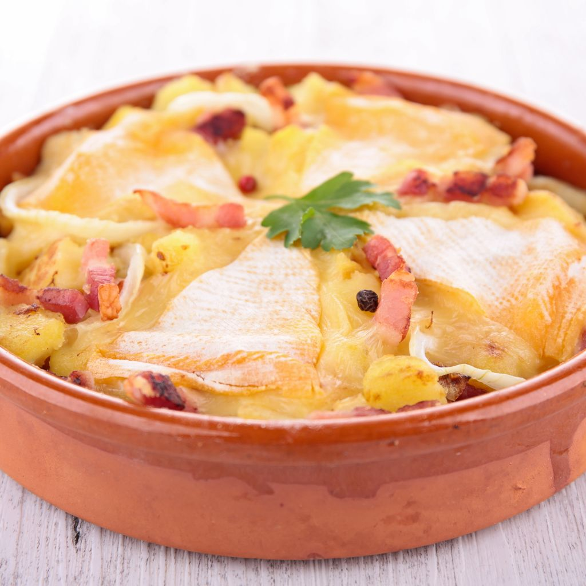

Tartiflette

La tartiflette est une recette de cuisine à base de gratin de pommes de terre, d'oignons,
de lardons et de crème fraîche, le tout gratiné au reblochon.
D'origine récente, la recette est devenue l'un des emblèmes de la cuisine française, y compris à l'étranger.
Ingredients
- pomme de terre
- fromage
- lardons
- salade
- charcuterie
Steps
- Lavez soigneusement les pommes de terre. Remplissez un grand faitout d’eau et jetez-y le gros sel.
Plongez les pommes de terre dans l’eau et faites-les cuire pendant 20 min après la reprise de l’ébullition.
- Pelez et émincez les oignons, en veillant bien à ôter le germe. Dans une poêle, faites chauffer l’huile et faites-y revenir les oignons émincés.
Lorsqu’ils deviennent translucides, ajoutez-y les allumettes de lardons fumés.
Poursuivez la cuisson en remuant régulièrement à l’aide d’une cuillère en bois, jusqu’à ce que les oignons et les lardons soient bien dorés.
Déglacez la poêle avec le vin blanc et poursuivez la cuisson pendant 5 min. Réservez.
- Préchauffez le four th.6-7 (200°C). Découpez le reblochon en longues lamelles. Dans un pilon, écrasez les grains de poivre blanc.
Pelez les pommes de terre cuites et coupez-les en grosses rondelles.
- Beurrez un grand plat à four ou de petits contenants individuels. Saupoudrez de noix de muscade et parsemez de poivre blanc concassé.
Répartissez-y les pommes de terre, puis les oignons et les lardons dorés au vin blanc.
Recouvrez le tout de crème fraîche, puis étalez-y les lamelles de fromage.
Enfournez la tartiflette pendant 30 min, jusqu’à ce que le reblochon forme une croûte bien dorée et gratinée.
- Servez votre délicieuse tartiflette bien chaude, dès la sortie du four,
accompagnée d’une belle salade verte à la vinaigrette et d’un verre de vin blanc de Savoie.